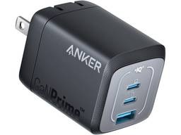
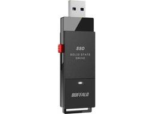
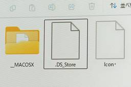
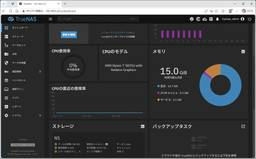
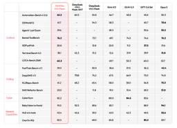
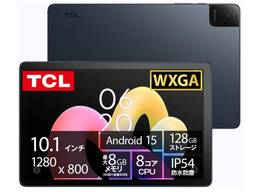
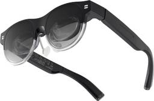
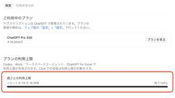

PC Watch
https://pc.watch.impress.co.jp
PC/テクノロジーの最新情報、レポート等でPC業界を先取り
フィード

【本日みつけたお買い得品】Amazonで約3千円安、Ankerの67W/3ポート充電器が4,390円
PC Watch
Amazonで、AnkerのUSB PD対応小型充電器「Anker Prime Wall Charger」が10月21日頃から価格が下がり、現在は値下がり前の7,480円から3,090円安い4,390円で販売されている。
11時間前

【本日みつけたお買い得品】バッファローの500GBスティックSSDが1,280円引き。Amazonセール 1
1
PC Watch
Amazonで、バッファロー製スティック型SSDの500GBモデル「SSD-PUT500U3-B/N」が、10月23日から1,280円引きとなり、1万1,520円で販売されている。
11時間前

Opus 5.5肉薄のコーディング性能、3Dも作る3兆級LLM「Kimi K3.1 Pro」。11月4日までにオープンウェイト化 26
PC Watch
オープンな大規模言語モデル(LLM)として初めてパラメータ数3T(3兆)級に到達した「Kimi K3」に、早くも改良版が登場した。Moonshot AIは10月24日(中国時間)、新しいLLM「Kimi K3.1 Pro」を発表した。同日からチャットサービス「Kimi」やデスクトップアプリ「Kimi Work」、コーディングツール「Kimi Code」、APIで提供を開始した。応答速度をK3.1 Proの2～3倍に高めた「Kimi K3.1 Pro Highspeed」も同時に提供する。オープンウェイト(モデルの重み)は11月4日までに公開する予定。
12時間前

【今すぐ読みたい！人気記事】「なんだよこの.DS_Storeってゴミは」。WindowsユーザーにウザがられるMacの隠しファイル、まとめて楽に消す方法 - PC Watch 1
PC Watch
Macユーザーはほとんど意識することはないが、Macからファイルを受け取ったWindowsユーザーの側では、実はウザく感じていることがある。それは、macOS特有の隠しファイルが一緒にくっついてくることだ。
15時間前

【今すぐ読みたい！人気記事】古いPCが無料で高機能NASに。「TrueNAS Community Edition」構築手順 - PC Watch
PC Watch
複数のPCやスマートフォン、タブレットなどのデジタル機器からネットワーク経由でアクセスでき、各種ファイルを共有できる「ファイルサーバーPC」。このファイル共有機能に特化した「NAS」(Network Attached Storage)という機器もあるが、こうしたファイルサーバーPCやNASを作るために最適化された「TrueNAS」というOSがある。
15時間前

人に頼む感覚でメールも予約も丸投げ。MetaのAIエージェント「Muse」が日本上陸 3
PC Watch
メールの送信や旅行の予約を代行してくれる、Metaの個人向けのAIエージェントが日本にやってきた。Metaは10月23日、パーソナルAIエージェント「Muse」の日本での提供を開始した。iOS/Android向けアプリおよびWeb版(muse.ai)で利用でき、基本機能は無料。本格的に活用したい人向けにはサブスクリプションプラン(月額2,799円から)も用意する。Museは2026年9月に北米で先行提供されており、北米以外では日本が初の提供地域となる。
1日前
7,000mAhバッテリで2日間使えるスマホ「motorola edge 70 fusion」 2
PC Watch
モトローラ・モビリティ・ジャパンは、7,000mAhの大容量バッテリを内蔵した約6.78型スマートフォン「motorola edge 70 fusion」を10月23日に発売した。直販価格は7万9,800円。
1日前
ChatGPTが2日連続の利用枠リセット予告。日本時間24日2時までに適用 1
PC Watch
「でも、そう……今日はリセットだ」。OpenAIでCodexとChatGPTを担当するThibault Sottiaux(ティボー・ソティオ)氏が10月23日(日本時間)、X(旧Twitter)にこう投稿した。全ユーザーを対象にした7回目の利用枠リセットの予告で、前日に続く2日連続のリセット予告となった。続く投稿によれば、適用は日本時間10月24日2時までで、「小さな機能追加」も同時に提供するという。
1日前
「Kimi K3.1」がまもなく登場？公式Xが動画を投稿 2
PC Watch
「Kimi K3.1」がまもなく登場か。Moonshot AIは10月23日、次期AIモデルの発表を思わせる動画を公式X(旧Twitter)にて投稿した。
1日前
【本日みつけたお買い得品】スイスのチョコレート「リンツ」の詰め合わせセットがオトク
PC Watch
Amazonにて、スイスのチョコレート会社「リンツ&シュプルングリー」のチョコレート菓子の詰め合わせセット「リンツ チョコレート リンドール テイスティングセット ピック&ミックス 16個入×2箱セット ショッピングバッグS付」が直近価格の800円引きとなる4,510円で販売されている。
1日前
ASUS、ウェイトで重さを変えられる軽量ゲーミングマウス。TMRスティックのコントローラも
PC Watch
ASUSは、ウェイトで重さを変えられる軽量ゲーミングマウス「ROG Gladius IV Ace Gaming Mouse」、および8Kポーリング対応でディスプレイ内蔵のコントローラ「ROG Raikiri II Pro PC Controller」を10月30日に発売する。実売予想価格はそれぞれ2万6,080円前後、3万7,280円前後の見込み。
1日前
【本日みつけたお買い得品】ActionRingの拡張キーボードが約4千円オトクに。Amazonセール中 1
PC Watch
Amazonにおいて、ActionRingのマグネット式キー採用の拡張キーボード「MAGTRAN M3」が、直近価格から3,999円引きとなる1万5,989円で販売されている。販売店は公式ではなく、BasicolorTech HK Limitedが務める。
1日前

部材高騰でもFMVは攻める、大隈社長が冬モデル発表会で語った戦略 3
PC Watch
富士通クライアントコンピューティング(FCCL)は10月22日、FMV 2026年冬モデル新製品発表会を東京都内で開催し、重量約634gの世界最軽量14型ノートPC「FMV Note U」新モデルをはじめ、ノートPCや周辺機器の新製品を発表した。それら新製品については関連記事を参照いただくとして、本稿では発表会についてお伝えする。
1日前

Space Bunnyの正体、MiniMax M3.1 Flashが428Bの重み公開 2
PC Watch
Claude Opus 5並みの性能並みの性能を持ち、覆面AI「Space Bunny」として正体を伏せて提供されていたLLMが、手元で動かせるようになった。MiniMaxは10月23日、コーディング向けLLM「MiniMax M3.1 Flash」のオープンウェイト(モデルの重み)を、Hugging FaceとModelScopeで公開した。ライセンスはMiniMax Community Licenseで、非商用での利用は無償。
1日前

【本日みつけたお買い得品】TCLの10.1型Androidタブレットが5千円引きで2万円ちょっと！Amazonセール中
PC Watch
Amazonにおいて、TCLのAndroidタブレット「TCL TAB 10L Gen4」が、直近価格から5,000円引きとなる2万1,980円で販売されている。
1日前

【本日みつけたお買い得品】目の前に最大100インチ相当の画面を。ASUSのスマートグラスが7千円引き。Amazonセール
PC Watch
Amazonで、スマートグラス「ASUS AirVision M1」が、10月20日から7,000円引きとなり、6万2,800円で販売されている。
1日前
【本日みつけたお買い得品】デルの薄型ノート「XPS 13」が3万円引きでAmazonセール中
PC Watch
Amazonにおいて、デルの薄型ノートPC「Dell XPS 13 DX13260」(MAX43T-GWSA)が、直近価格の3万円引きとなる12万7,980円で販売されている。
1日前

コスパ重視なのに高級感、デル「Dell 14S」の4色を実機でチェック 3
PC Watch
デル・テクノロジーズは10月22日、4色のカラバリを揃えたコスパ重視のノートPC「Dell 14S(DS14270、以下Dell 14Sと表記)」シリーズの国内向け製品発表会を開催した。このうち、メモリ16GBモデルについては、同日より販売を開始しており、8GBモデルについては11月下旬以降の発売を予定している。
1日前
【本日みつけたお買い得品】ASUSのRTX 5060ゲーミングノートが5万円引き。Amazonセール中
PC Watch
Amazonにおいて、ASUS製ゲーミングノートPC「ASUS TUF Gaming F16 FX608JMI」(FX608JMI-I7R5060321T)が、直近価格から5万円引きとなる29万9,800円で販売されている。
1日前

「今日はリセットの日だ」ChatGPTが深夜に利用枠リセット 1
PC Watch
「忘れたと思っただろうが、今日はリセットの日だ」。OpenAIでChatGPTとCodexを担当するThibault Sottiaux(ティボー・ソティオ)氏が10月22日(日本時間)、X(旧Twitter)に投稿した。全ユーザーを対象にした利用枠リセットの予告で、続く投稿では適用時期を「明日の午前10時(太平洋時間)まで」としている。日本時間では10月23日2時までにあたる。
1日前